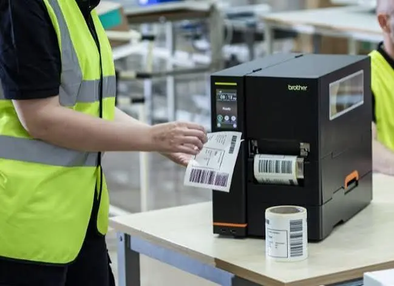
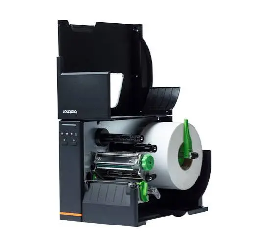
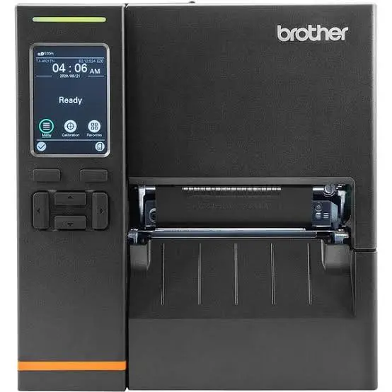

Label & barcode
Width, length, resolution, symbology, fine text, density, durability, adhesive, and scanning requirements.
Brother TITAN
Matrix helps organizations select Brother TITAN thermal printers by label, barcode, media, throughput, integration, operator workflow, and the consequence of interrupted output.
At the Point of Production
In manufacturing, warehousing, logistics, and distribution, the label connects physical work to inventory, identification, routing, compliance, and chain of custody. The printer must fit that operating role.

Define the Requirement
Speed alone does not define an industrial label system. Barcode quality, media, integration, handling, and recovery all influence the operational result.
Width, length, resolution, symbology, fine text, density, durability, adhesive, and scanning requirements.
Direct thermal or thermal transfer, ribbon, roll size, rewinding, peeling, cutting, and operator loading.
Daily volume, peak demand, batch size, turnaround, redundancy, and the consequence of unavailable labels.
Label software, databases, ERP or WMS workflows, connectivity, templates, access, and change management.
Operator Workflow
Visible media and ribbon paths can make routine loading and changeover easier to understand. Matrix evaluates those operator actions alongside training, remote guidance, supplies, and escalation so industrial printing does not become an unofficial second job.

Configuration Fit
Matrix helps narrow the TITAN options by resolution, speed, print width, connectivity, rewinding, and application requirements, then validates the configuration against representative labels and real operating conditions.
Discuss a TITAN application →
We will help define the media, barcode, volume, workflow, integration, operator tasks, and continuity requirements before recommending a TITAN configuration.